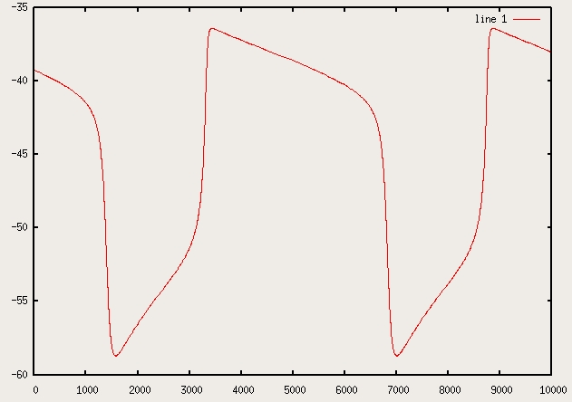

The parameters are set to replicate Fig 6D in Canavier CC, Oprisan SA, Callaway JC, Ji H, Shepard PD. Computational Model Predicts a Role for ERG in Repolarizing Plateau Potentials in Dopamine Neurons: Implications for Modulation of Neuronal Activity. J. Neurophysiol 98:3006-3022. 2007 The output is the time followed by the state variables for voltage, fraction of activated ERG channels, activation of the calcium channel, calcium, activation of the H current, and fraction of inactivated of the ERG channels. ------ To run the programs in linux/unix, after extracting the files and cd'ing to the directory you can type: make koprisan ./koprisan > output.dat and then make plots for example with octave load output.dat plot (output(:,1),output(:,2)) which shows the voltage time series: 